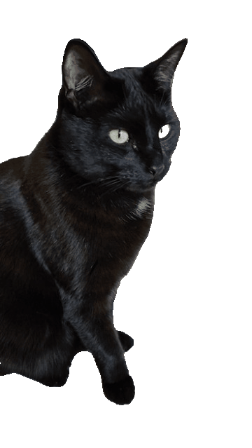

The Changes and Why
SA and Area Differences
Math Involved
Regular Plastic Bottles are boring and overated, destroying the environment without even looking fashionable? Disgusting.
The boring straight cylinders used, not only are depressing to look at but kill the environment slowly. Like islands made of plastic? Atleast have the plastic be in silly shapes
The straight cylinders not only look vial in those rafts made out of plastic but, use more surface area than other designs meaning more plastic is used
Although the solution is quite simple, to merely choose a different shape. Bags and other devices have been accustomed to these bottle designs
But this new bottle finds a solution, based around flasks, the bottle can be strapped on, not having pesky handles but instead a simple strap, taking up less surface area, and making me throw my computer trying to code the design in
Regular Water bottles
Volume: 499.8cm3
Surface Area: 440.14cm2
My Water bottles
Volume: 556.19cm
Surface Area: 343.49cm2
Regular Water bottles
Volume: 499.8cm3 | Surface Area: 440.14cm2
New Water bottles
Volume: x | Surface Area: y
VReg Bottle <= VMy Bottle
SAReg Bottle(RB) > SAMy Bottle(MB)
VMB >= 499.8 | SAMB < 440.14
let inputSphereRadius = 4.5;
const atrunc1bRad = (inputSphereRadius * .5); //Since I dont want the full sphere radius, I gambled and put 1/2 or .5 to created a more fitting big radius for my wants
const atrunc1sRad = atrunc1bRad / 1.75; //1.75 derives from how much difference I want between radius b and radius s. Doing it by hand I gambled 1, or 2 times the diviviter of radius b, but when coding in the shape, 1.75 matched my wants better so I coded it in.
const atrunc1h = atrunc1bRad * 1.2; //The height is as such to create a consistent height when the sphere radius is altered. Calling the correlated radius and then multiplying by a proprtion allows the height to fluctuate with radius while also giving the computer a reliable number to do math with
const atrunc2bRad = (inputSphereRadius * .25); //.25 is 1/2 of .5. With my earlier equation(that still worked just was overcomplicated). ((1/2 * change * sphereRadius) /(2 * 3.14 * sphereRadius)), the 1/2 displayed the divide with the prior equation resulting in .25 when change would equal 4.5 and sphere was 1(you are so lucky I ran this through chatgpt to simplify it)
const atrunc2sRad = atrunc2bRad / 1.75; //Important to note the use of 1.75 does not make the small radius equal to the small radius of the other truncated cone. Using trunc2B switches the value to make the same differental of the bigger cone. (idk if differental is the right word but I dont care too much about grammar)
const atrunc2h = atrunc2bRad * 1.2; //And lastly, the last truncated cone height, which takes the big radius and multiplies a a proportion to get a value that is able to be of use.
//Volumes
function volumeSurfaceArea(){
const sphereVol = (4/3) * 3.14 * Math.pow(inputSphereRadius, 3); //The volume of sphere, also so silly how its Math.pow to get the power of a number lmao
const trunc1Vol = (1/3) * Math.PI * atrunc1h * (
Math.pow(atrunc1bRad, 2) +
atrunc1bRad * atrunc1sRad +
Math.pow(atrunc1sRad, 2)
); //The volume of a truncated cone is really long lmao, something like 1/3(pi * h(r^2 +(r*R)+ R^2)), and smh I remembered that, but yea long equation which random fact, in code it derives from a cylinder in three.js
const trunc2Vol = (1/3) * Math.PI * atrunc2h * (
Math.pow(atrunc2bRad, 2) +
atrunc2bRad * atrunc2sRad +
Math.pow(atrunc2sRad, 2)
); //Love how I started this to explain the code, no sane person is gonna look at this lmao.
//Surface Areas
let l1 = Math.sqrt(Math.pow(atrunc1sRad, 2)+Math.pow(atrunc1h, 2));//l1 is the slanted height of truncated cone 1, which is the big cone it square roots the small radius ^ 2 + the height ^ 2.
let l2 = Math.sqrt(Math.pow(atrunc2sRad, 2)+Math.pow(atrunc2h, 2));l2 is the slanted height of truncated cone 2, which is the small cone, it square roots the small radius ^ 2 + the height ^ 2.
const sphereArea = (4 * 3.14 * Math.pow(inputSphereRadius, 2));4 * pi * sphereRadius ^ 2, the surface area formula
const trunc1Area = ( 3.14 * (atrunc1bRad + atrunc1sRad) * l1 + 3.14 * (Math.pow(atrunc1bRad, 2) + Math.pow(atrunc1sRad, 2)));Its the truncated cone surface area formula
const trunc2Area = ( 3.14 * (atrunc2bRad + atrunc2sRad) * l2 + 3.14 * (Math.pow(atrunc2bRad, 2) + Math.pow(atrunc2sRad, 2)));Another truncated cone surface area formula(why do I be picking the most long equationed shapes possible)
const base1Area = 3.14 * Math.pow(atrunc1bRad, 2); // base of truncated cone 1The bases need to be defined, to be able to subtract from total surface area so that space where the surfaces are connected will have that missing area (Im tired I can not type lmao)
const base2Area = 3.14 * Math.pow(atrunc2bRad, 2); // base of truncated cone 2
const totalArea = sphereArea + trunc1Area + trunc2Area - 2 * (base1Area + base2Area);//This is where the base areas are called, taking the inital surface area and subtracting from the big base(which is connected to the sphere therefor requiring an extra set of subtraction to create an open linkage) takes away mass that would otherwise make the other totals wrong, if the surfaces connected to eachother are not subtracted correctly, the total amount of volume would be less while the surface area would be more.
input1.innerHTML = `Area: ${totalArea.toFixed(2)}, Volume: ${totalVol.toFixed(2)}`;//This is simply the code to print, and round the number to the hundreth place
radius of sphere in cm
Volume: 556.19cm3 Surface Area: 343.49cm2